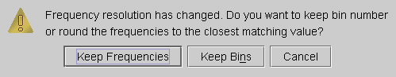
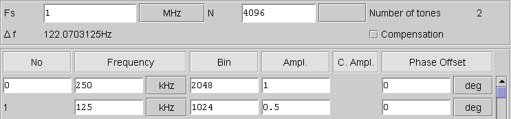
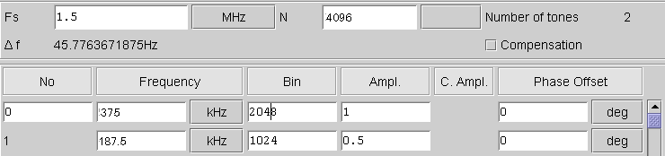

Changing the General Waveform Settings
When changing Fs or N when tones have already been defined, these changes will affect the tone definitions, because the bin and tone frequency relation will change.
The Multitone Setup tool will display the following dialog box for you to determine how the change should affect your tone definitions.

You can select if you want to keep the new tone frequencies as close as possible to the old frequencies an adapt the bin numbers accordingly, or to keep the bin numbers and change the frequencies as required.
The following figure is an example of how either selection affects your tone definitions.
Fs = 1 MHz

Fs changed to 1.5 MHz keeping frequencies
Fs changed to 1.5 MHz keeping bin numbers
